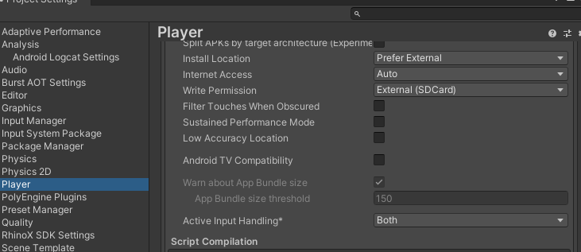
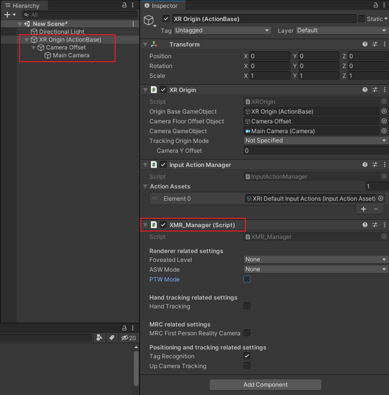
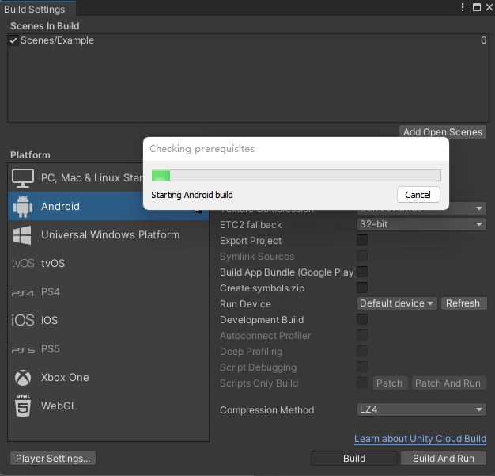

3.入门指南
此章节旨在帮助您从零开始使用RhinoX Unity XR SDK进行开发。
如果您是一名初学者，那么建议您详细参考此文档以及文档中相关链接进行学习；
如果您之前已经接触过Unity XR开发，也建议您仔细阅读此章节内容，其中有一些设置需要注意。
如果对文档中的内容有疑问，您可以进入 论坛 进行提问，我们将及时为您解答。
3.1 准备工作
目前此SDK主要支持RhinoX Pro头显，开发前请确认您使用了正确的头显设备。
RhinoX Pro设备(灰色或者蓝色)
一根Type-C数据线
一台开发电脑
3.2 搭建开发环境
因为RhinoX Pro是基于Android系统的设备，且RhinoX Unity XR SDK是基于Unity引擎的SDK，所以使用前您需要准备以下软件环境。
配置adb环境
安装Unity Hub以及合适的Unity编辑器版本
1 配置adb环境
主要用于apk应用的安装
先点击 Android SDK platform-tool 进入官网进行下载：
参照 此教程 配置adb环境变量
2 安装Unity
先点击 Unity Hub下载 进入官网下载Unity Hub
下载安装Unity，建议使用 2020.3 版本
Note
目前已测支持版本为：2019.4、2020.3、2021.3，不建议使用其他未测试版本
安装Unity以及安卓开发环境
Note
Android Build Support是打包安卓apk必须的软件环境，请务必确认全部勾选以下安装包
3.3 下载并导入SDK
目前RhinoX Pro头显只支持RhinoX Unity XR SDK，您需要选择正确的SDK进行下载
1 下载SDK
跳转到 SDK页面 ，选择RhinoX Unity XR SDK页面， 点击 “下载最新版” 进行下载
下载完成后您将得到如下压缩包
Note
如果压缩包名称不一致，请确认您是否下载了RhinoX一代头显的SDK，此SDK与RhinoX Pro的SDK不一样
2 新建Unity项目
打开Unity Hub，在 项目 -> 新项目 ，选择使用推荐的Unity版本新建项目， 推荐使用 2020.3 版本
Note
如果推荐的Unity版本未安装，请从Unity官网下载并安装。
参考以下设置新建项目：
Note
模板选择3D
路径以及项目名称中不能出现中文字符
3 导入SDK
在项目窗口选择Window->Package Manager，点击左上角的 + 号，选择Add package from disk

找到解压好的Ximmerse_UnityXR_SDK文件夹路径(文件夹后缀为版本号)，选中package.json打开
导入完成后，编辑器顶部将出现 Ximmerse XR SDK 按钮，至此，SDK导入完成。
3.4 项目设置
1.切换目标平台
因为RhinoX Pro是Android平台设备，所以需要将Build平台切换为Android
打开菜单项File > Build Settings
在Platform列表中选择Android平台
点击Switch Platform
Note
如果没有Switch Platform按钮，请返回步骤3.2查看Unity是否安装Android Platform Build Support module
2.设置Player Settings
Player Settings中有很多发布需要的设置项，为了确保打包出来的应用能够正常使用，请务必按照以下要求进行设置
在Edit->Project Settings->Player->Other Setting中，将Active Input Handling修改为Both，此操作需要重启项目后生效。

重启项目后，点击菜单项Ximmerse XR SDK->Initialize XR SDK，对SDK进行初始化
Attention
如果应用打包出来有问题，您可以在Edit->Project Settings->Player->Other Setting中，对照如下设置项，检查是否与推荐设置一致， 建议您使用以下推荐配置。
配置项 |
推荐值 |
|---|---|
Default Orientation |
Landscape Left |
Color Space |
Linear |
Multithreaded Rendering |
false |
Graphics API |
OpenGLES3 |
Compute Skinning |
true |
Graphics Jobs |
false |
Normal Map Encoding |
XYZ |
Shader Precision Model |
Use platform defaults for sampler precision |
Munimum API level |
Android 8.0’Oreo’(API level 26) |
Target Sdk Version |
Automatic(highest installed) |
Scripting Backend |
IL2CPP |
Api Compatibility Level |
.NET_Standard_2_0 |
C++ Compiler Configuration |
Release |
Target Architectures |
ARM64 |
VSync Count |
Dont’t Sync |
3.设置XR Loader
Attention
确保Assets/XR/Loaders中Ximmerse XR Loader的Settings不为空。
在Asset->XR->Loader里面选择Ximmerse XR Loader，按照如下图进行设置
4.勾选Ximmerse XR Plugin
Attention
不勾选此选项会导致打包出来的应用闪退
点击Edit->Player Settings ->XR Plug-in Management，勾选 Ximmerse XR Plugin 。
3.5 搭建场景
1.创建新场景
点击菜单项File > New Scene创建一个新的Scene，命名并保存Scene，此例中命名为Example
2.检查XR Interaction Toolkit
XR Interaction Toolkit 是 Unity 提供的高级工具包，包含许多跨平台的 XR 交互功能，使用前需要先下载Sample文件，主要包含以下两个部分：
Starter Assets：该示例文件默认位于 Assets/Samples/XR Interaction Toolkit/[version]/Starter Assets 目录下，提供了一套示范配置文件，包括一套默认的输入动作和预设。
XR Device Simulator: XR 设备模拟器，提供用于模拟 XR 头戴和手柄的资产，默认位于 Assets/Samples/XR Interaction Toolkit/[version]/XR Device Simulator 目录下。 该示例文件允许通过鼠标和键盘输入来操控头戴和手柄。文件夹内包含与模拟器配套使用的示例 Binding，以及一个可以在场景中 快速使用的预制体。
详细信息可查看 此文档
Attention
使用 ActionBase 创建交互时，务必下载 Starter Assets，否则无法进行交互。
下载步骤如下：
Note
由于Unity版本bug，2020.3.4以上版本可能无法自动安装XR Interaction Toolkit，建议使用2020.3.21.或者按照下图手动安装。
3.添加摄像机
删除场景中默认的Main Camera，在Hierarchy面板单击鼠标右键，点击XR -> XR Origin(ActionBase)自动添加组件
Note
请勿修改XR Origin以及Main Camera的Rotation值
若使用的XR Interaction Toolkit版本比较新，此处XR Origin(ActionBase)显示为XR Origin(VR)
将Main Camera上的Tracked Pose Driver（input system）替换为Tracked Pose Driver脚本
Attention
如果不替换，应用启动后如果头显息屏或者退到后台再启动，画面会卡住
创建完成后如下图：
此处默认添加的是ActionBase组件，除此之外还有DeviceBase组件，若想详细了解可参考 从零开始教程 。
4.移除天空盒
MR应用与VR应用的最大区别在于，MR可以看到现实的世界，所以在MR应用中通常不需要天空盒作为背景，按照如下步骤可以去除天空盒
在场景中选择XRRig->Camera Offset->Main camera, 在Inspector中更改如下设置：
Camera的Clear Flags选为Solid Color
Background选择纯黑色
如下图所示：

5.添加手柄交互功能
在MR应用中，我们主要使用手柄进行交互，在上面添加的XR Origin中，我们可以看到 LeftHand Controller 以及 RightHand Controller 两个对象，他们分别代表左右手柄。
这里我们以左手柄为例，介绍如何添加手柄交互功能
1. 添加手柄的默认设置
按照如下步骤添加系统预设配置文件，这些设置主要用于绑定手柄按键与其对应的操作行为。
Note
如果此处无法添加配置文件，请返回第2步下载Sample文件。
2. 添加手柄模型
我们在SDK中提供了默认的手柄预制体，如果您需要在项目中显示手柄模型，可以在如下路径中找到手柄预制体
然后将对应的预制体对象直接拖拽到LeftHand Controller->XR Controller->Model Prefab处
右手柄交互添加方式同上。
3. 添加Input Action Manager脚本
由于RhinoX Unity XR SDK中使用了最新的Unity输入系统，所以需要添加 Input Action Manager 脚本来控制输入：
按照如下图步骤，在 XR Origin 对象下，通过Add Component添加脚本
新增Element0，然后添加 XRI Default Input Actions 文件即可
6.创建Ground Plane
在RhinoX Pro的系统中 Ground plane是非常重要的组件，它主要用于定位场景的地面，应用启动后通过识别Ground Plane中 绑定的对应ID的定位信标，来定位场景的地面，他的作用与VR一体机中扫描地面来确定游戏使用范围的原理类似。
通常我们将Groundplane对象与场景的地面置于同一平面（与Unity场景的地面重合），这样启动应用，并识别定位板之后，场景的地面 就会自动被定位到Groundplane对象放置的平面（通常是地面）
如果你不希望将Groundplane对象放置在地面，比如放置在墙上或者桌子上，那么您可以通过设置Groundplane对象的Transform的 Y值来调整他与Unity场景地面的相对高度，具体效果，您可以通过实际测试观察.
Attention
举个例子：如果将Groundplane对象的Position的Y值设置为1，Unity场景地面的Y值为0，那么当你戴上头显低头识别到Groundplane 对象（Beacon）后，你的视线高度（Camera）就是你的身高加上1m，这个时候Unity场景里面的地面就是在现实地面的下面1m的位置 。如果你希望Unity中的地面与现实的地面重合，你可以将Beacon放置在距离现实地面1m高的位置，或者将Groundplane的 Positon Y值也设置为0即可。
Note
因为一体机出货默认标配的是1号Beacon，所以我们通常使用Beacon作为Ground Plane。如果Beacon无法满足使用需求，可向销售申请 其他形式的Tag使用，具体使用方法请查看 TagProfileLoading介绍
先添加Tag Profile Loading组件，然后勾选Beacon（表示可识别1，2，3号Beacon）


右键添加 Ground Plane ，设置Track ID为65（代表1号Beacon）,勾选 DebugView 选项（识别到会显示坐标轴）


7.添加地面
在Hierachy界面点击鼠标右键，创建一个Plane，Transform设置为（0，0，0），至此一个简单的场景创建完成。
此场景只包含一个地面，以及双手柄的模型，如果您需要实现更丰富的功能，如模型的抓取，UI交互等，您可以自行学习Unity XR相关 开发知识，也可以参考 从零开始教程 进行学习。
3.6 打包运行
1.打包应用
选择File->Build Settings，点击Add Open Scenes按钮添加当前Scene，然后点击 Build 按钮，设置APK名称和路径，开始编译:
等待编译完成，Unity将弹出保存路径，可以看到编译出的APK文件。
2.安装应用
保证RhinoX Pro设备开机并电量充足，使用Type-C数据线连接开发电脑和RhinoX Pro设备，通过如下adb命令安装APK即可：
Note
如果您不熟悉adb的使用，可以返回 搭建开发环境 进行查看，或者直接下载 adb安装apk脚本 工具进行使用
3.运行应用
确认双手柄均已连接头显，通过手柄射线启动应用，启动应用后先将Beacon（圆盘）放在地面，戴上头显低头识别Beacon。
此时您将看到一个地面出现在Beacon上方，如果上面的设置中勾选了DebugView，识别到之后Beacon上会显示红绿蓝三轴坐标 ，如果勾选了却不显示，则代表未识别成功，请返回 创建GroundPlane 章节检查配置
移动Beacon的位置，重新定位Beacon，地面位置会跟着移动。当手柄在视野内移动时，手柄的模型会跟随移动。
如果您能够看到上述现象，则表示您已经基本掌握了SDK的开发流程，更复杂的应用开发，您点击 Unity XR培训资料 进入论坛 查看相关学习资料，预祝您开发顺利！
3.7 参考示例
如果您是初次搭建场景，您可以直接导入Sample示例进行参考，具体操作步骤如下
其中 HelloUnity 示例是RhinoX Unity XR SDK的基础示例场景， Gaze And Gesture Interaction Sample 是 手势识别的示例场景。
如果您希望获取更详细的示例教程，可以前往 示例教程 进行下载学习。